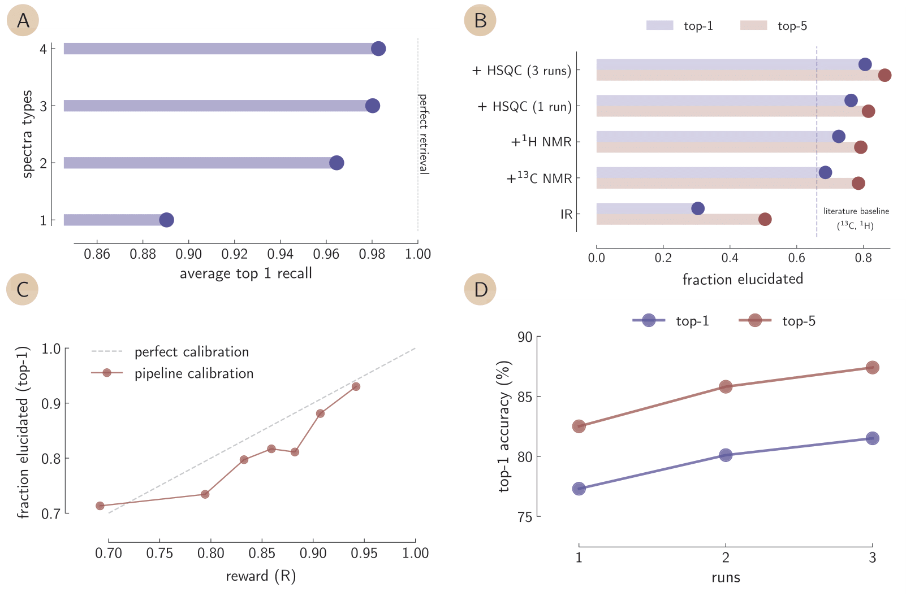
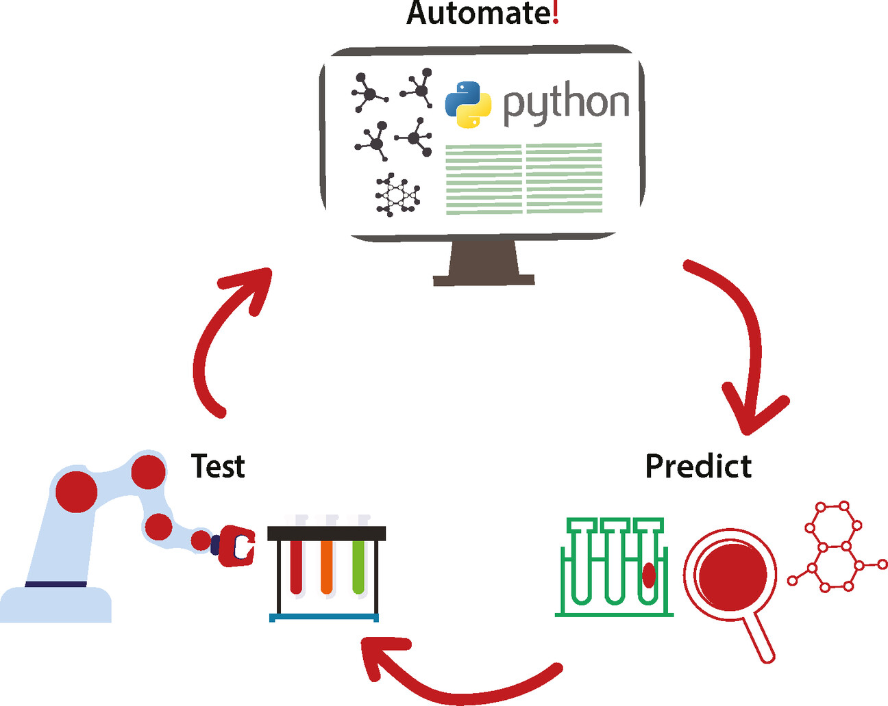

About me
PhD researcher with experience in AI for chemical sciences. I have worked on diverse projects—from low-complexity ML applied to homogeneous catalysis, to building models and systems from scratch for molecular chemistry, spectroscopy, and materials science.
Additionally, I have experience with molecular simulations and data management from roles at Software for Chemistry and Materials and Stability AI.
Selected Publications
-
 Elucidating structures from spectra using multimodal embeddings and discrete optimization
In: review at Nature Communications (2024)
-
General purpose models for the chemical sciences
In: arXiv preprint (in review at Chemical Reviews) (2025)
-
A framework for evaluating the chemical knowledge and reasoning abilities of large language models
In: Nature Chemistry (2025)
-
ChemPile: A 250GB Diverse and Curated Dataset for Chemical Foundation Models
In: Advances in Neural Information Processing Systems 39 (2025)
-
 Paving the road towards automated homogeneous catalyst design
In: ChemPlusChem (Cover Feature)
Resume
Education
-
PhD in Digital Chemistry, Helmholtz Zentrum Berlin
2023 — PresentAdvisor: Kevin Jablonka
-
MSc Chemical Engineering, Delft University of Technology
2021 — 2023Advisor: Evgeny Pidko
-
BSc Chemical Engineering & Biotechnology, Aalborg University
2018 — 2021Advisor: Marco Maschietti
Experience
-
Data Research Engineer - Part Time, Stability AI
August 2023 — July 2024Contributed to Open Science and ChemNLP by collecting and curating chemistry datasets and performing data research.
-
Intern in Computational Chemistry and Software Engineering, Software for Chemistry and Materials
April 2023 — July 2023Conducted literature reviews, applied graph theory to chemical problems, and benchmarked internal conformer generation tools.
-
Teaching Assistant – Part Time, Delft University of Technology
April 2023 — July 2023Restructured a Master-level course on computational, numerical, and data science methods for 140 graduate students.
-
Teaching Assistant – Part Time, TotalEnergies
April 2023 — July 2023Analyzed and cleaned employee data, built a Microsoft Office pipeline for data streamlining, and provided IT/HR support.